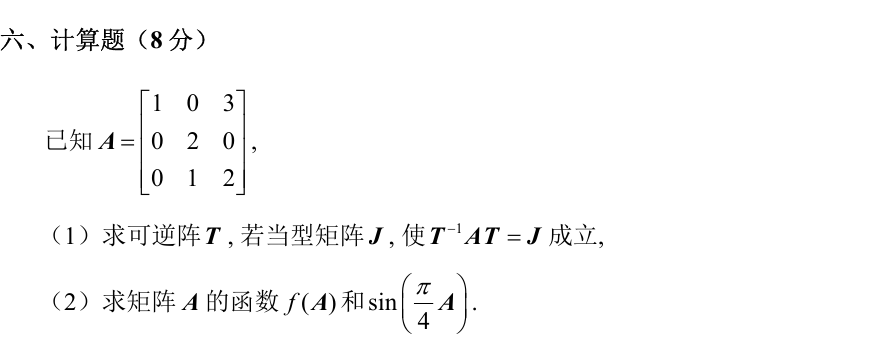
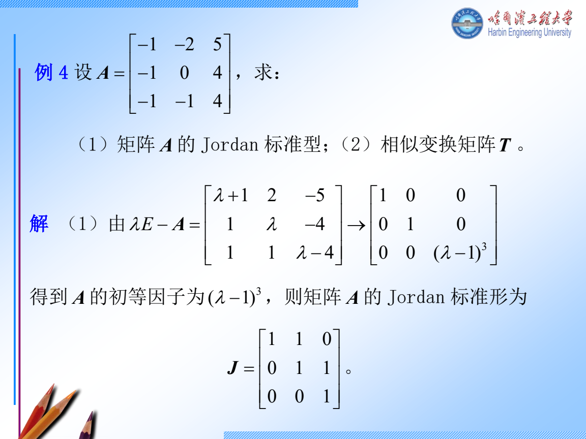
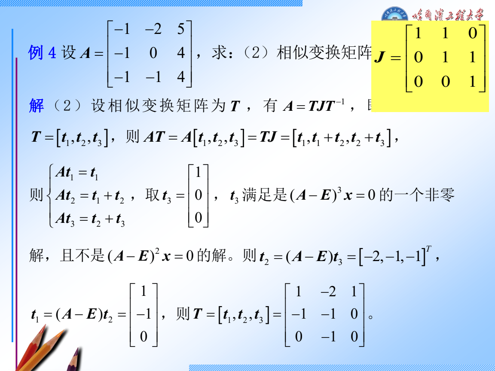
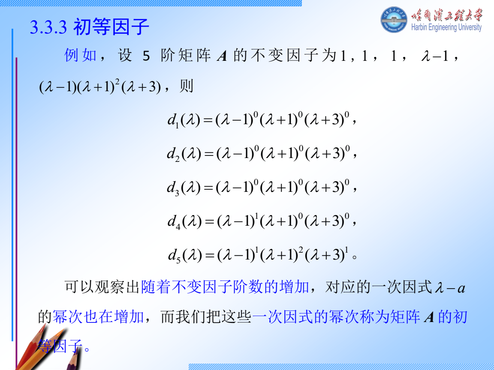
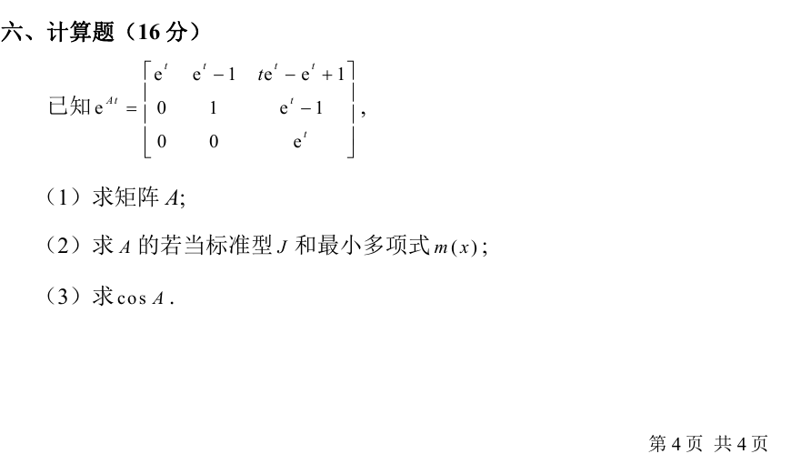
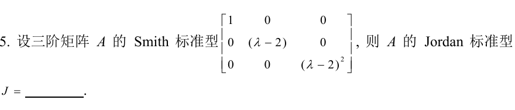
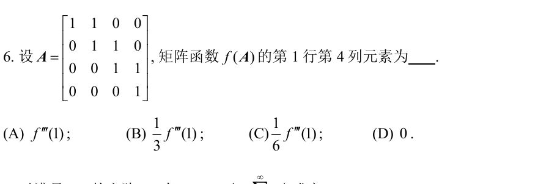
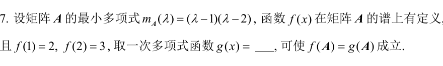

周三 11 月 11 日｜若当形、最小多项式和矩阵函数
今天 210 分钟。 若当链 55 分钟，Smith 和多项式 45 分钟，矩阵函数 55 分钟，真题 45 分钟，闭卷复盘 10 分钟。只有 90 分钟时，先做跟做 1、跟做 3 的前四步，再独立完成 W1、W2。若当和矩阵函数各有 9 道历年计算题，今天要练完整书写。
讲义与跟做
跟做 1 2024 哈尔滨 VI 求 J,T 及矩阵正弦

- 先找特征值和代数重数。 沿 tI−A 的第一列展开。左上角是 t−1，下面两项为零，剩下的 2×2 子式行列式是 (t−2)2。所以 χA(t)=(t−1)(t−2)2。
- 求 λ=1 的向量。 A−I 第二行给 x2=0，第三行给 x2+x3=0，故 x3=0。取 u=e1。
- 求 λ=2 的普通特征向量。 N=A−2I=−100001300。解 Nv=0，第三行给 v2=0，第一行给 v1=3v3。取 v3=1，得到 v=(3,0,1)T。特征空间只有一维，二重根必须对应一块 J2(2)。
- 解链的第二步。 Nw=v 给 w2=1, −w1+3w3=3。取 w3=1，得 w=(0,1,1)T。核对 Nw=(3,0,1)T。
- 作列并核对。 T=[u,v,w]，J=diag(1,J2(2))。detT=−1。逐列计算 Au=u,Av=2v,Aw=v+2w，故 AT=TJ。最低化零式取各特征值的最大块，mA(t)=(t−1)(t−2)2。
- 在简单块和二阶块上算函数。 一阶块给 f(1)。二阶块写成 2I+S, S=[0010]，因为 S2=0，二阶及以上的泰勒项全部消失。所以
f(A)=Tf(1)000f(2)00f′(2)f(2)T−1.
- 代指定的正弦函数。 f(x)=sin(πx/4)，故 f(1)=2/2, f(2)=1, f′(2)=(π/4)cos(π/2)=0。直接写成 Tdiag(2/2,1,1)T−1。若需要原坐标矩阵，解 T(a,b,c)T=(x1,x2,x3)T 得 c=x2,b=x3−x2,a=x1+3x2−3x3。令 s=2/2，乘回得到
sin(4πA)=s003(s−1)103(1−s)01.
遇到更大的块。 设 dk=dimker(A−λI)k, d0=0。一个大小 s 的 λ 块对 dk 贡献 min(k,s)。所以 dk−dk−1 数的是大小至少为 k 的块。例如 d1=2,d2=3,d3=4，差为 2,1,1，得到一个三阶块和一个一阶块。接三阶链时，先挑 w∈kerN3 且 N2w=0，再按 N2w,Nw,w 作列。多条链选完后还要验列独立。
展开第三章三阶链 PPT 原例和续解


跟做 2 Smith 形、三类因子和高次降幂
以 diag(1,t−2,(t−2)2) 为例。
- 对特征矩阵 tI−A，Dk 指所有 k 阶子式的首一最大公因式。令 D0=1，则不变因子 dk=Dk/Dk−1。例如这里的 D1=1, D2=t−2, D3=(t−2)3。对角阵二阶非零子式里有 1⋅(t−2)，其余都能被它整除。
- 从 Smith 对角线直接读不变因子 1,t−2,(t−2)2。丢掉 1，把每个非平凡因子按不同根拆成幂，得到两个初等因子 t−2,(t−2)2。所以 J=J1(2)⊕J2(2)。若反过来从块出发，同一根的指数从小到大排，各根向右对齐，短行左边补 0，再按列相乘。最后再补 1 到矩阵阶数。
- 特征多项式为 (t−2)3，最低化零式为 (t−2)2。特征多项式由 Cayley–Hamilton 定理也能化零。相似判断需要完整的因子或块信息，仅凭最大块不够。
- 举例算 A3。令 N=A−2I，则 N2=0。(2I+N)3=8I+12N+6N2+N3=12A−16I。一般多项式题把 p(t) 除以 mA(t)，余式代回即可，因为商乘 mA(A) 为零。
- 只求某一不变因子时可以尽早结束。若阵中已有非零常数元素，便有 D1=1。若又能找到一个非零常数二阶子式，便有 D2=1，不用枚举所有子式。练这个动作可用 2025 哈尔滨 II.8 原题。选第 2、3 行，第 1、2 列的子式，行列式为 2⋅3−0=6，所以 d2=1。

跟做 3 2024 青岛 VI 从 eAt 反求 A，再求 cosA

- eAt=I+tA+2t2A2+⋯。逐项求导后在 t=0 取值，只留下 A。原卷 (1,2) 项 et−1 在 0 的导数是 1。(1,3) 项 tet−et+1 的导数是 tet，在 0 等于 0。其余条目同样求导，得
A=100100011.
- 上三角的对角线是 1,0,1，故 χA(t)=t(t−1)2。解 (A−I)x=0 时第一行给 x2=0，第二行给 −x2+x3=0，于是 x3=0。特征值 1 只有一维特征空间，所以 J=J2(1)⊕[0]，mA(t)=t(t−1)2。
- 决定匹配什么。 0 对应一阶块，只用 cos0=1。1 对应二阶块，除了 cos1 还要 −sin1。取二次多项式 r(t)=1+at+bt(t−1)，它已自动满足 r(0)=1。
- 逐一求系数。 r(1)=1+a=cos1，故 a=cos1−1。r′(t)=a+b(2t−1)，在 1 处有 a+b=−sin1，故 b=1−cos1−sin1。
- 代入原矩阵。 A2=100100111，所以 A2−A 仅 (1,3) 为 1。由匹配条件，r 在每个块上与余弦的值相同，因此
cosA=I+aA+b(A2−A)=cos100cos1−1101−cos1−sin1cos1−1cos1.
- 交卷前回查。 对角元素应是 cos1,cos0,cos1。再代回 r′(1) 核对符号。四阶块最远的超对角线来自 N3，系数为 f′′′(λ)/3!。阶数 s 对应最高导数 s−1。
独立练习
W1 2024 青岛 II.5，3 分钟

看分步答案
- 先读 1,t−2,(t−2)2，忽略单位因子 1。
- 两个非平凡因子都只有一个根，指数分别为 1、2，因此分别对应一个一阶块和一个二阶块。
- 可以交 J=200020012。两个块合起来三阶，核维数是 2。
W2 2024 哈尔滨 I.6，3 分钟

看分步答案
- A=I+N，N 在第一超对角线上有 1。N2 和 N3 的 1 分别在第二和第三超对角线上，N4=0。
- (1,4) 离主对角线三格，只有 N3 在那里贡献 1。
- N3 的系数是 f′′′(1)/3!=f′′′(1)/6，选 C。
W3 2024 哈尔滨 II.7，4 分钟

看分步答案
- 最小多项式只有两个单根 1、2，故仅匹配两个函数值。
- 设 g(t)=at+b，条件是 a+b=2, 2a+b=3。
- 相减得 a=1，代回得 b=1，故 g(t)=t+1。
W4 完整写出一遍综合题，限时 22 分钟
盖住跟做 3，从原卷的 eAt 重新求 A,J,mA,cosA。把第三问换成 sinA 再做一遍。
看变式答案
- 沿用 mA(t)=t(t−1)2，在 0 匹配 sin0=0，在 1 匹配 sin1 和 cos1。
- 取 r(t)=at+bt(t−1)。令 r(1)=sin1，得 a=sin1。令 r′(1)=cos1，得 b=cos1−sin1。
- 用已经核对过的 A2−A 代入，得 sinA=(sin1)A+(cos1−sin1)(A2−A)。
当天验收
不看讲义写出三行：AT=TJ 怎样逐列验、mA 怎样读指数、函数在哪个根上要匹配几阶导数。若第三行会漏条件，明天开始先重做 W4 的匹配步骤。